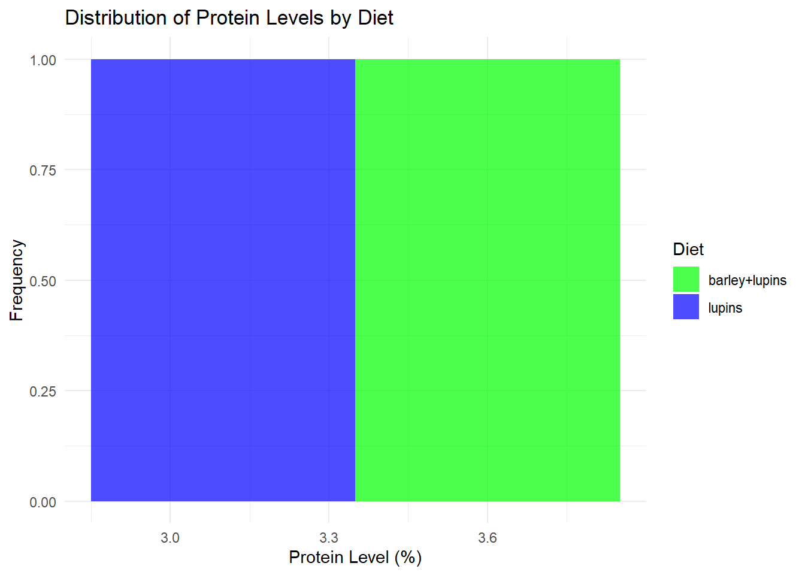

In this section, we will analyze two datasets related to dietary effects on milk protein levels in cows and gene expression data for the alpha-synuclein gene. The analysis includes data cleaning, visualization, hypothesis testing, and statistical adjustments for multiple comparisons. The tools used are dplyr, ggplot2, and tidyverse.
6.1 Analysis of Milk Protein Levels
6.1.1 Data Preparation
We analyze milk protein levels at specific time points after calving for cows on different diets. The objective is to assess dietary effects on protein levels and compute statistical summaries and comparisons.
Cow Diet Time protein
Length:10 barley+lupins:5 Min. :6 Min. :2.900
Class :character lupins :5 1st Qu.:6 1st Qu.:3.125
Mode :character Median :6 Median :3.350
Mean :6 Mean :3.350
3rd Qu.:6 3rd Qu.:3.575
Max. :6 Max. :3.800
##Exploratory Data Analysis
###Visualization of Protein Levels by Diet
ggplot(milk_data, aes(x = Diet, y = protein, color = Diet)) +geom_boxplot() +geom_jitter(width =0.2, alpha =0.6) +labs(title ="Protein Levels by Diet", x ="Diet", y ="Protein Level (%)") +theme_minimal()
6.2.1 We test if there is a significant difference in protein levels between diets.
t_test_results <-t.test(protein ~ Diet, data = milk_data)t_test_results
Welch Two Sample t-test
data: protein by Diet
t = 5, df = 8, p-value = 0.001053
alternative hypothesis: true difference in means between group barley+lupins and group lupins is not equal to 0
95 percent confidence interval:
0.2693996 0.7306004
sample estimates:
mean in group barley+lupins mean in group lupins
3.6 3.1
ggplot(milk_data, aes(x = protein, fill = Diet)) +geom_histogram(alpha =0.7, position ="identity", bins =10) +labs(title ="Distribution of Protein Levels by Diet", x ="Protein Level (%)", y ="Frequency") +scale_fill_manual(values =c("lupins"="blue", "barley+lupins"="green")) +theme_minimal()

# Adjust for multiple comparisonsp_adjusted <-p.adjust(t_test_results$p.value, method ="bonferroni")p_adjusted